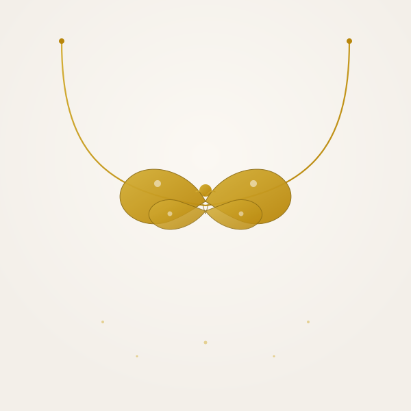

The butterfly necklace meaning comes down to one idea: change, and the beauty that comes after it. A butterfly doesn't start out as a butterfly — it transforms completely first — which is exactly why the symbol has become one of the most personal, story-driven pieces of jewelry you can gift.
Unlike a heart or an infinity symbol, which represent a feeling that stays constant, a butterfly represents a feeling that's still becoming something. That distinction is what makes the butterfly necklace meaning in love different from every other symbol on this list.
If you want to compare it with other romantic symbols, you can also read our full guide on necklace symbols and their meanings in love.
Butterfly Necklace Meaning (Quick Guide)
Jump to: Meaning in Love | Gold Butterfly | Butterfly vs Infinity vs Heart
- General meaning → Transformation, growth, and new beginnings
- In love → A relationship that grows and evolves together
- Gold butterfly → Transformation, with added warmth and permanence
- Best for → Milestones, new chapters, anniversaries
What Does a Butterfly Necklace Symbolize?
At its core, a butterfly necklace represents transformation — the idea that something beautiful often follows a period of change. Because the symbol is tied so closely to metamorphosis, it carries meaning beyond romance alone. Depending on who's wearing it and why, a butterfly necklace can represent:
- Personal transformation → Worn to mark growth, a fresh start, or leaving something behind
- Freedom → A reminder of independence and lightness
- Romantic growth → Given between partners to represent a relationship that keeps evolving
Butterfly Necklace Meaning in Love

Best for: Relationship milestones, new chapters, and anniversaries
In a relationship, a butterfly necklace symbolizes evolving love — the mutual growth and change two people go through together, and the beautiful, ongoing bond that comes from it. It's less about a love that stays exactly the same and more about a love that keeps becoming something new.
That's why it's often chosen for moments that mark real change: moving in together, a new city, a relationship becoming official, or simply an anniversary that feels like a turning point. If your relationship has grown into something different from where it started, this is the symbol that says so.
We don't currently carry a butterfly design ourselves, but the meaning it represents — a love with no end point, always continuing forward — is exactly what the Infinity Love Necklace stands for. If the butterfly's symbolism is what drew you here, the infinity design is the closest match in our collection.
Gold Butterfly Necklace Meaning
Best for: Milestone gifts and everyday wear
A gold butterfly necklace carries the same transformation symbolism as any butterfly design, with gold adding its own layer of meaning — warmth, value, and permanence. It's a common choice when the moment being marked feels significant enough to want something that lasts, rather than a casual, everyday piece.
Because a new chapter is often exactly what a butterfly necklace is meant to celebrate, many people pair the symbolism with something made just for that moment — like a Custom Name Necklace, personalized to the relationship itself.
Butterfly vs Infinity vs Heart — What's the Difference?
| Symbol | Meaning | Best For |
|---|---|---|
| Butterfly | Transformation, growth together | New chapters, milestones |
| Infinity | Endless, continuous love | Anniversaries, long-distance love |
| Heart | Romantic affection | Birthdays, Valentine's Day |
Choose Butterfly if: Your relationship has visibly grown or changed and you want to mark that — see the Infinity Love Necklace
Choose Infinity if: You want something that represents a love with no end point — read our infinity necklace meaning guide
Choose Heart if: You want the clearest, most universally understood symbol of love — see our heart necklace meaning guide
Who Gives (and Wears) a Butterfly Necklace?
Because its meaning centers on personal growth rather than romance alone, a butterfly necklace fits a wide range of relationships and moments:
- A romantic partner — to mark a relationship evolving into something new
- Yourself — as a reminder of a personal transformation or fresh start
- A close friend — to celebrate a big life change together
A butterfly necklace carries no gender restriction — it's worn by anyone marking a chapter of change, whether the gift comes from a partner or is bought as a personal piece.
A Love That Keeps Growing

If you're marking a relationship that's grown into something new, the Infinity Love Necklace carries the same "no end point" meaning behind the butterfly symbol.
FAQ – Butterfly Necklace Meaning
What does a butterfly necklace mean?
A butterfly necklace symbolizes transformation, growth, and new beginnings. Because a butterfly changes completely before becoming what it's meant to be, the necklace represents personal change, freedom, and moving into a new chapter of life.
What does a butterfly necklace mean in love?
In a relationship, it represents a love that helps both people grow. It's often given to mark a relationship evolving — moving in together, a proposal, or simply a bond that keeps changing for the better — rather than a static, unchanging love.
What does a gold butterfly necklace symbolize?
A gold butterfly necklace carries the same core meaning as any butterfly design — transformation and new beginnings — while gold adds warmth, permanence, and value, making it a common choice for milestone gifts.
Is a butterfly necklace a good gift for a girlfriend?
Yes. It works well as a girlfriend gift because it can mark a specific turning point in the relationship — a new city, a new job, moving in together, or the relationship becoming more serious — without feeling as heavy as an engagement symbol.
What is the spiritual meaning of a butterfly necklace?
Spiritually, butterflies are often associated with the soul, rebirth, and personal transformation. A butterfly necklace can represent letting go of an old chapter and stepping into a new one.
Can a butterfly necklace represent a relationship milestone?
Yes. Because its meaning is built around change, it's a natural fit for relationship milestones — anniversaries, moving in together, or any moment where the relationship has visibly grown into something new.
Final Thoughts
The butterfly necklace meaning is really about what comes after change — growth, freedom, and a new chapter worth marking. Whether you're celebrating a relationship that's evolved or a personal transformation of your own, it's a symbol built around the idea that becoming something new is worth celebrating.
If you want to explore more symbolic necklace ideas, you can visit our complete guide on necklace symbols and meanings in love.